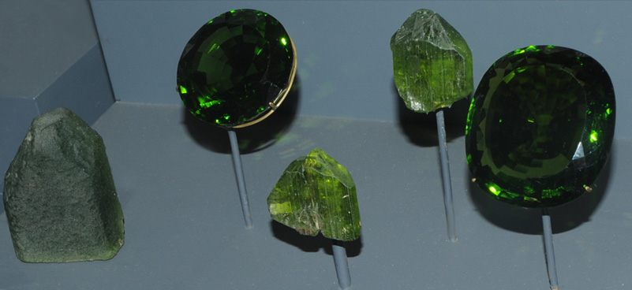
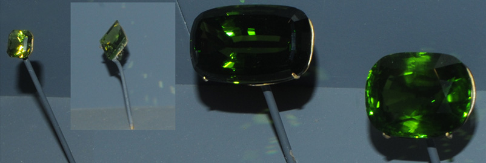
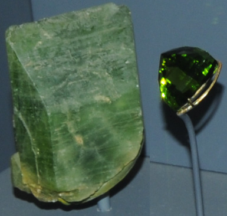
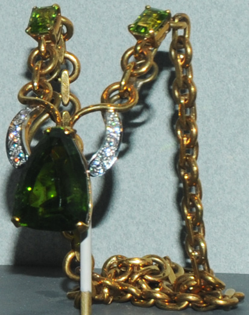
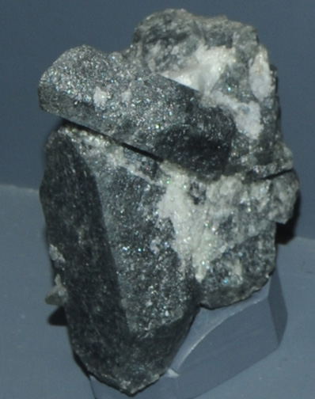
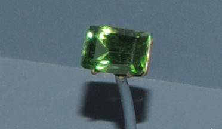

Forsterite
Forsterite is a silicate of magnesium with the composition Mg2SiO4. These samples are described as being the variety peridot. The sample above left is about 1.5x2 cm and the sample at right is about 6x5 cm. They are from Shush-Bemah mine, San Carlos, Arizona. All these samples are on display at the Smithsonian Museum of Natural History.

Forsterite is valued as a green gemstone. The mineral sample at left is about 2x2.5 cm and the accompanying gem is 286.6 carats. It is from Burma. The mineral samples on the right are on the order of 1x1 cm and the gem is 311.8 carats. They are from Zabargad Island, Egypt.

The gem at left above is 3.1 carats and is from Trachtyte Hill, Ross Island, McMurdo Sound, Antarctica. Next is an 8.9 carat gem of variety peridot from San Carlos, Arizona. The two gems at right are 122.7 and 103.2 carats and are of unknown origin.
|

The forsterite (peridot) sample is about 4x5 cm and the gem is 18.1 carats.They are from Northern Areas, Pakistan. The necklace contains a 34.7 carat forsterite gem of variety peridot. It is from San Carlos, Arizona.
|

|
|

|

The sample at left is forsterite with apatite. It is about 4x7 cm and is from Kovdor, Kola Peninsula, Russia. The gem above is of variety peridot and is 4.1 carats. It is from Norway.
|
Mindat: forsterite
|
Index |